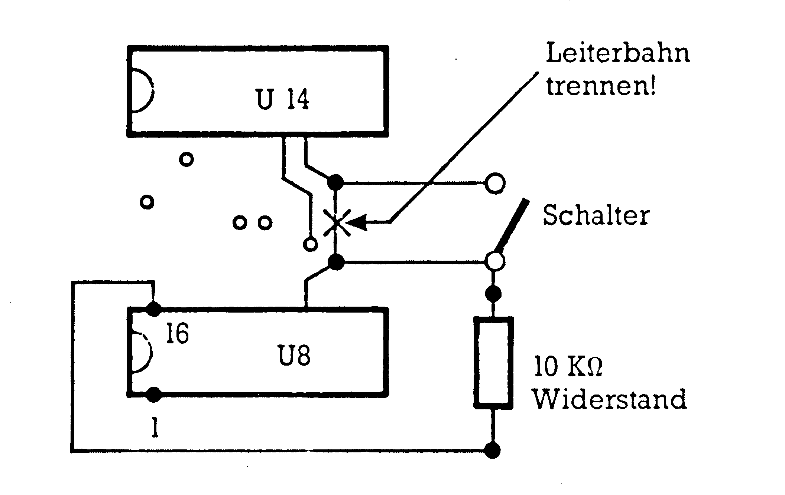

Tips & Tricks zum C 16 und Plus/4
Haben Sie Ärger mit Ihrer C 16-Speichererweiterung? Wir geben Ihnen dazu wichtige Hinweise. Außerdem bringen wir zwei interessante Tricks für Maschinensprache-Profis und ein Programm zum Zeichnen von erstaunlichen dreidimensionalen Funktionen.
Kürzlich entbrannte in der 64'er-Redaktion ein heftiger Streit darüber, wie kompatibel zueinander ein C 16 mit 64-KByte-Erweiterung und ein Plus/4 denn nun wirklich seien. Das Betriebssystem ist bei beiden Computern absolut identisch, wie durch Vergleiche nachgewiesen werden konnte. Trotzdem erscheint beim Einschalten eines Plus/4 die Meldung »3-PLUS-1 ON KEY F1« und bei einem C 16 nicht. Auch die Belegung der <F1>-Taste ist verschieden. Es muß also vom Computer eine Unterscheidung vorgenommen worden sein. Doch werden bei einem Plus/4 außer der Belegung von <F1> noch andere Speicherstellen gegenüber dem C 16 geändert? Wenn ja, welche?
An dieser Stelle sind Sie als Tüftler aufgerufen, der Sache einmal näher auf den Grund zu gehen. Welche Routine ist für die Unterscheidung zuständig? Anhand welchen Kriteriums wird unterschieden? Welche Auswirkungen auf Programme hat das? Schreiben Sie uns! Stichwort »Aktion C 16, Plus/4«. Den besten Beitrag werden wir in dieser Rubrik veröffentlichen. Viel Spaß beim Knobeln.
(tr)RAM-ROM-Umschaltung
Laut Handbuch kann man beim C 16 und Plus/4 das RAM ab $8000 durch Schreiben von $80 in die Adresse $07F8 vom Monitor aus einschalten. Leider funktioniert dies nicht innerhalb von Maschinenprogrammen. Dazu gibt es eine andere Möglichkeit: Durch Ansprechen der Adressen $FF3E (ROM) und $FF3F (RAM) wird das Betriebssystem ein- und wieder ausgeblendet. Das kann zum Beispiel durch »STA $FF3F« geschehen, wobei der Inhalt vom Akku in diesem Moment unwichtig ist.
Da das Betriebssystem komplett ausgeblendet wird, stürzt spätestens beim ersten IRQ der Computer ab. Er springt ja dann ins RAM. Eine kleine Routine sorgt dafür, daß bei jedem Interrupt zuerst auf das ROM umgeschaltet wird:
Marke1 SEI ;Interrupt ausschalten
STA Merke1 ;Register retten
STX Merke2
STA $FF3E ;ROM einblenden
LDA #<(Marke2) ;neuer Rücksprungvektor
PHA ;auf Stack legen
LDA #>(Marke2)
PHA
TSX ;Stackpointer
LDA $0103,X ;für den späteren RTI
PHA ;auf Stack
LDA Merke1 ;Register wieder holen
LDX Merke2
JMP $FCB3 ;zur Interrupt-Routine.
Marke2 SEI ;hier weiter nach IRQ-Routine
STA $FF3F ;RAM ein
RTI ;Ende.
Dieser neue Teil der Interrupt-Routine, der an jeder beliebigen Adresse liegen kann, muß von Ihrem Hauptprogramm noch aktiviert werden. Ihr Programm sollte also so beginnen:
SEI ;IRQ aus
STA $FF3F ;RAM ein
LDA #<(Marke1) ;Interrupt-Vektor auf
STA $FFFE ;neue Routine richten
LDA #>(Marke1)
STA $FFFF
CLI ;IRQ wieder freigeben
... ;und weiter im Hauptprogramm
Beim Anpassen auf einen beliebigen Speicherbereich beachten Sie bitte die Schreibweise »LDA # <(Marke)«. Dies bedeutet: »LDA mit Low-Byte von der Adresse, an der »Marke« steht«. »# > (...)« bedeutet High-Byte.
(Christoph Richard/tr)Tip zur Dela-Speichererweiterung
Da es vom C 16 verschiedene Hardware-Versionen (Platinen-Layouts) gibt, kann es zu einer Fehlfunktion der 64-KByte-Erweiterung von Dela kommen. Diese äußert sich meist so:
— Bildschirm füllt sich mit wirren Zeichen
— Andere Einschaltmeldung als »60671 Bytes free«
— Programme stürzen unkontrolliert ab
Bei diesen Computern ist es erforderlich, die eingebauten 16 KByte RAM des C 16 abzuschalten. Die Erweiterung enthält nämlich nicht 48 KByte, sondern 64 KByte. Das bedeutet, daß der erste 16-KByte-Block zweimal vorhanden ist, wodurch die beschriebenen Fehler auftreten können.
Im folgenden soll beschrieben werden, wie Sie sich einfach einen Schalter zum Abschalten der internen 16 KByte einbauen können. Vergessen Sie aber nicht, daß durch so einen Eingriff die Garantieansprüche für den Computer verloren gehen!
Schrauben Sie zuerst das Gehäuse auf. Trennen Sie die Leiterbahn zwischen den ICs U14 und U8 (siehe Bild 1!) mit einem Messer oder Schraubenzieher. An der Trennstelle, die zu U8 führt, wird nun ein 10 kΩ-Widerstand als Pull-up-Widerstand gegen +5 Volt geschaltet (zum Beispiel am Pin 16 von U8).

Wenn Sie für immer auf das eingebaute RAM verzichten wollen, sind Sie jetzt bereits fertig. Allerdings dürfen Sie dann die Erweiterung nicht mehr aus dem Expansion-Port herausziehen.
Anderenfalls bauen Sie sich einen Schalter zum Aus- und Einschalten der internen 16 KByte ein. Bild 1 zeigt Ihnen, wo Sie den Schalter anschließen müssen.
Für den Fall, daß Sie den Schalter nicht selbst einbauen möchten, bietet Dela-Elektronik (Adresse im Anzeigenteil) einen kostenlosen Einbauservice an. Schicken Sie Ihren C 16 an Dela und Sie bekommen ihn umgebaut wieder zurück. Der Garantieanspruch geht dabei natürlich genauso verloren.
(Dela-Elektronik/tr)Nützliche Kernel-Routine
Maschinensprache-Programmierer werden folgende Routine zu schätzen wissen: Sie hat die Startadresse $FF4F und ist noch namenlos. Wird sie durch JSR $FF4F aufgerufen, gibt sie den Text, der direkt (!) nach dem JSR-Befehl im ASCII-Format folgt, auf dem Bildschirm aus. Am Ende des Textes muß ein Null-Byte ($00) stehen. Das Programm wird dann nach diesem Null-Byte fortgesetzt!
(Hartwig Alte/tr)Tolle 3D-Grafiken
Dreidimensionale Grafiken faszinieren immer wieder. Das vorliegende Programm in Listing 1 erzeugt aus mathematischen Formeln 3D-Funktionsgraphen. Als erstes müssen Sie das Programm abtippen und speichern. Wenn Sie es mit RUN starten, sehen Sie zunächst ein Auswahlmenü mit sieben Punkten vor sich. Drücken Sie die jeweilige Zahlen-Taste, um die Funktion auszuführen.
<1> Funktionen zeichnen: Das Programm »merkt« sich gleichzeitig fünf Funktionen. Im Listing 1 sind bereits fünf Formeln zum Ausprobieren enthalten. Sie werden gefragt, welche der fünf Funktionen Sie zeichnen möchten (Anwahl wieder mit Tasten <1> bis <5>). Der Grafikbildschirm wird vorher nicht gelöscht. Sie können also mehrere Funktionen übereinander zeichnen lassen. Ansonsten vorher Punkt <7> ausführen.
<2> Funktion ändern: Zuerst erfolgt wieder eine Anwahl, welche der fünf mathematischen Funktionen Sie verändern möchten. Wenn Sie über keine mathematischen Kenntnisse verfügen, schauen Sie sich am besten die bereits gespeicherten Funktionen mit Menüpunkt <3> an und ändern dann die Zahlen in kleinen Grenzen. Zur Eingabe der Funktionen: Auf dem Bildschirm sehen Sie oben alle fünf Formeln aufgelistet und unten steht der Cursor nun neben dem »=« Zeichen. Geben Sie die neue Funktion nun ein und drücken Sie zweimal <RETURN>. Danach befinden Sie sich wieder im Hauptmenü.
<3> Funktionen zeigen: Die Programmzeilen 530 bis 620, die die Funktionen enthalten, werden auf dem Bildschirm aufgelistet. Durch Drücken einer beliebigen Taste gelangen Sie wieder ins Hauptmenü zurück.
<4> Anzahl Linien ändern, und
<5> Anzahl Punkte ändern: Sie können wählen, wie genau die Grafik gezeichnet werden soll. Um den Effekt zu verdeutlichen, experimentieren Sie ein wenig mit den vorgegebenen Werten.
<6> Grafik zeigen: Die zuletzt gezeichnete Grafik wird auf dem Bildschirm dargestellt. Durch beliebigen Tastendruck kommen Sie ins Hauptmenü zurück.
<7> Grafik löschen: Die zuletzt gezeichnete Grafik wird gelöscht. Es erfolgt keine Bestätigung auf dem Bildschirm.
Sie können die Zeichenroutine jederzeit durch längeres Drücken der <RUN/STOP>-Taste abbrechen. Sie befinden sich dann wieder im Hauptmenü.
(Mirko Pepa/tr)